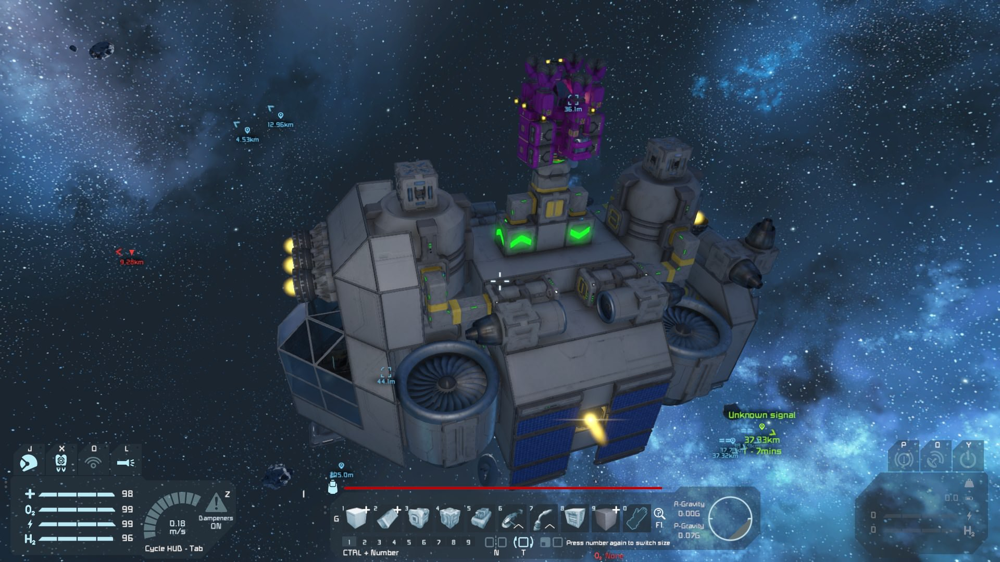

General
This is a large-grid ship designed for providing access to space from an Earthlike (or any other) world in the early and middle stages of a game. It is capable of carrying a couple small miner or other ships on its upper deck, while storing large quantities of cargo to ultimately be ferried back to the surface. I tend to use it to carry a mining ship so I can rapidly acquire massive quantities of ore to be returned to the planet for processing, as mining in space is far easier and more productive than doing so on the planetary surface, and a grinding ship so that I can grind down any captured ships during my trip and return their components as well.
This is actually an updated and expanded version of a design I used in my survival world back in 2017, including both new content from later game updates and my own modding/scripting, as well as improved design in many places thanks to my increased skill in ship design since then.
 What it looked like back then.